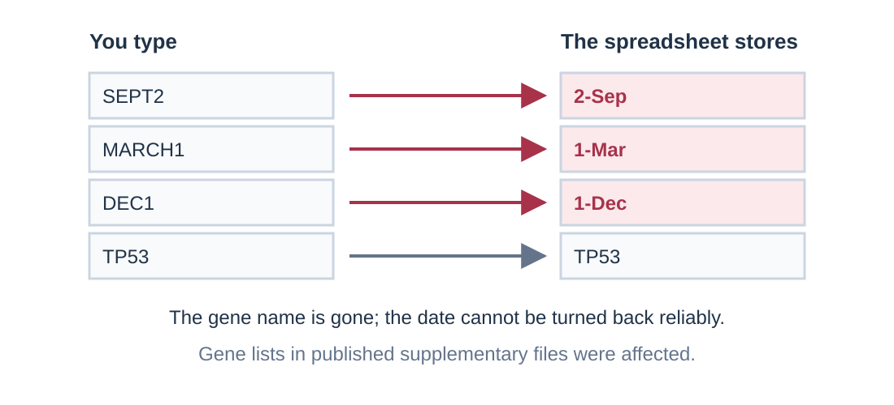
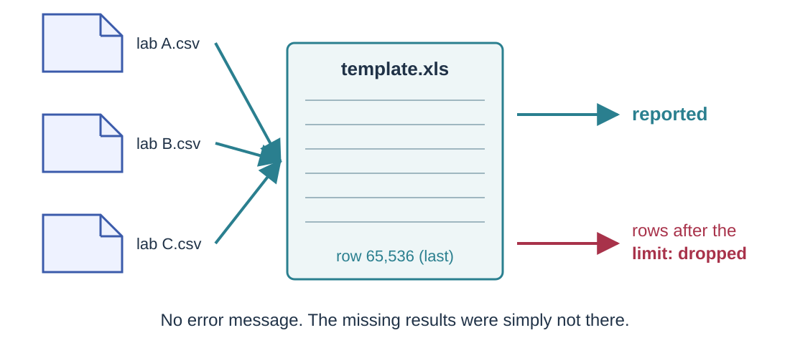
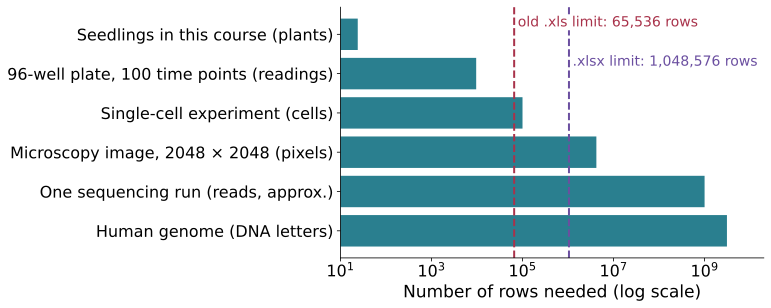
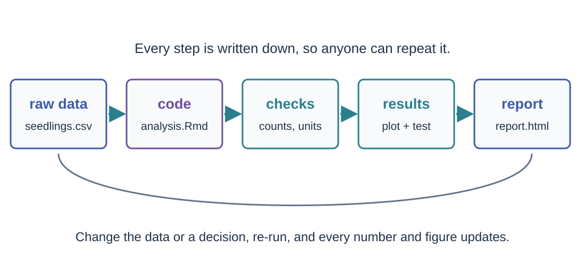

Biology is now measured in files: plate-reader exports, microscope images, sequencing reads, field records. In every lab course, in your thesis, and in most jobs after it, someone will hand you data and ask what it shows.
In five weeks you will learn to:
organise and inspect data files, and use a terminal;
analyse a table in R instead of clicking in a spreadsheet;
describe variation and compare groups honestly;
write a report that anyone can re-run and get the same numbers.
You do not need any programming experience.
Spreadsheets change your data
Type the gene symbol SEPT2 into Excel and it becomes the date 2 September. MARCH1 becomes 1 March.
This happened in published papers: about one in five papers with Excel gene lists had damaged names (Ziemann et al., 2016).
In 2020 the gene-naming committee gave up and renamed the genes (SEPT2 → SEPTIN2, MARCH1 → MARCHF1).

A spreadsheet converts the gene symbols SEPT2, MARCH1 and DEC1 into dates, while TP53 is unchanged.
Spreadsheets lose data without telling you
In October 2020, England’s public health agency left out nearly 16,000 positive COVID-19 tests from its daily reports.
Lab results were collected in an old .xls spreadsheet format, which holds at most 65,536 rows. Everything after that row was dropped.
No error message. Contact tracing of those people was delayed.

Lab CSV files are loaded into an .xls template; rows beyond row 65,536 are dropped without an error.
Biological data are getting big

Bar chart on a log scale: 24 seedlings and a plate-reader run fit in a spreadsheet; a single-cell experiment, a microscopy image, a sequencing run and the human genome exceed the old .xls and the .xlsx row limits.
A modern spreadsheet stops at about 1 million rows. One sequencing run gives around a billion reads; one microscope image has millions of pixels.
These data need code, and sometimes a bigger computer than your laptop. Week 5 shows how to estimate when.
Clicks leave no record; code does

Raw data flow through code, checks and results into a report; changing anything and re-running updates every number and figure.
A supervisor asks: “how did you get this number?” With clicks, you cannot show it. With code, the answer is the code.
Fix one wrong value in the raw data, re-run, and every figure and table updates.
The five weeks
Week
Question
You will
1 Files and the terminal
What is in our data files, and where are they?
Tell plain text from Word/Excel files, use paths and a terminal, meet R
2 R and reports
How much did the seedlings grow?
Import a table, calculate, plot, and render an R Markdown report
3 Variation
How much do individual plants differ?
Check data quality, summarise groups, understand SD and replicates
4 Comparisons and lines
Did the treatment work? How do two measurements relate?
Estimate a difference with uncertainty, analyse pairs, fit a line
5 Bigger data and reproducibility
Can someone else repeat our analysis?
Estimate data size, use a remote computer, run a small study, reproduce it
Summary
Spreadsheets silently change data (gene names into dates) and lose it (the COVID row limit).
Biological data are growing far beyond what a spreadsheet can hold.
Code keeps a complete, re-runnable record from raw data to report.
This course teaches that workflow from the very first file.
Before Day 1: install the software via the Getting started pages and download the course files.
Next (Day 1, kinds of files): plain text versus Word and Excel files, and why it matters for your data.